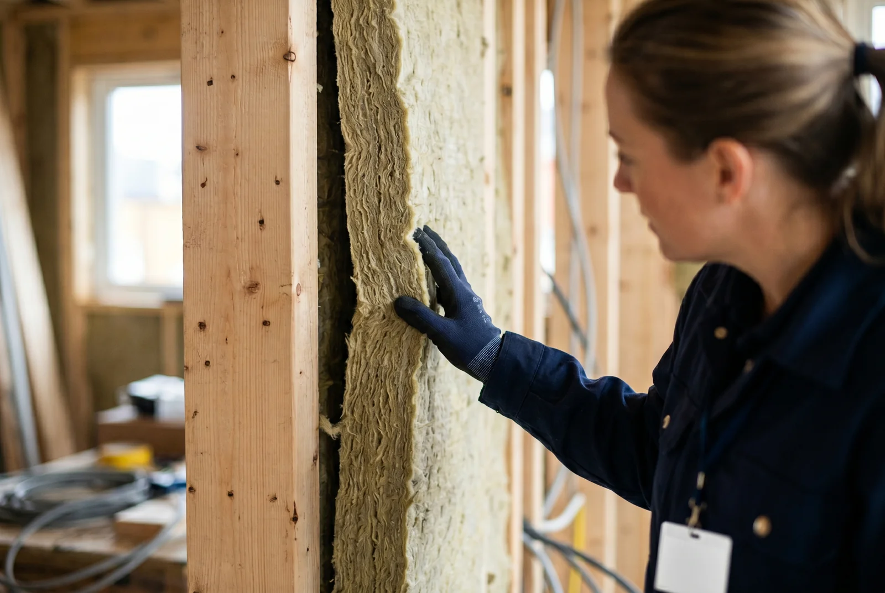
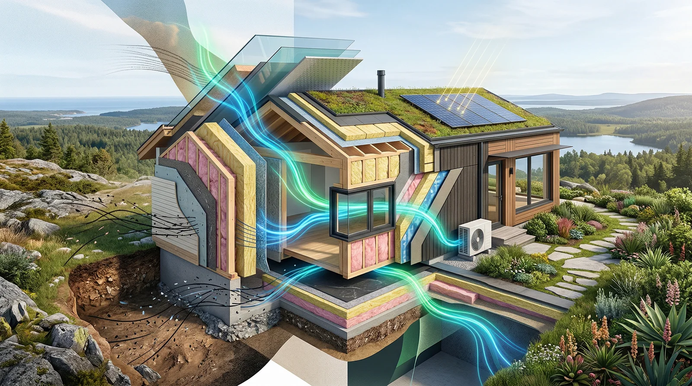

Inhaltsverzeichnis
- Wenn der Energieausweis schlechte Nachrichten bringt
- Was Sie brauchen, bevor Sie starten
- Modernisierungsempfehlungen lesen und verstehen
- Die wirkungsvollsten Sanierungsmaßnahmen priorisieren
- Förderungen und Finanzierung optimal nutzen
- ROI berechnen – wann sich die Investition lohnt
- Typische Fehler vermeiden
- Fazit und nächste Schritte
Das Wichtigste in Kürze: Ein schlechter Energieausweis kostet Sie 2.500+ Euro jährlich – Sanierungen amortisieren sich in 10–15 Jahren. Heizungstausch, Fassadendämmung und Dachsanierung sind die wirkungsvollsten Maßnahmen mit bis zu 50 % Ersparnis. BAFA-Zuschüsse (bis 20 %) und KfW-Darlehen (bis 70 %) senken die Eigenmittel erheblich. Ein individueller Sanierungsfahrplan ist das Schlüsseldokument für maximale Förderung.
Wenn der Energieausweis schlechte Nachrichten bringt
Ihr Energieausweis liegt vor – und das Ergebnis fällt unbefriedigend aus. Die neue EU-Skala von A bis G, die ab Mai 2026 in Deutschland gilt, bewertet Häuser deutlich kritischer als früher. Viele Hausbesitzer rutschen dadurch in schlechtere Klassen, was sich unmittelbar auf den Immobilienwert auswirkt.
Was bedeutet ein schlechter Energielabel wirklich? Vereinfacht gesagt: Ihre Heizanlage läuft auf Hochtouren, Ihre Fassade verliert Wärmenergie, und Ihre jährlichen Energiekosten sind höher als notwendig. Typischerweise zahlen Haushalte mit Klasse G oder schlechter 2.500 Euro und mehr pro Jahr für Heizung und Warmwasser – ein Betrag, den Sanierungen erheblich senken können.
Warum sollten Sie jetzt handeln statt warten? Erste Gründe sind gesetzliche Fristen: Während private Hauseigentümer 2026 noch keine Sanierungspflicht haben, müssen Immobilien ab 2030 mindestens die Klasse F erreichen. Je länger Sie zögern, desto teurer wird es, und desto länger zahlen Sie vermeidbar hohe Energiekosten. Hinzu kommt: Energiepreise sind volatil, Fördermittel regelmäßig Veränderungen unterworfen, und Handwerkstermine werden enger.
Was Sie brauchen, bevor Sie starten
Eine erfolgreiche Sanierung beginnt mit gründlicher Vorbereitung. Sie brauchen zunächst einen aktuellen Energieausweis mit Modernisierungsempfehlungen. Dieser Ausweis ist mehr als ein Label – er ist Ihre persönliche Sanierungslandkarte. Er zeigt Ihnen konkrete Maßnahmen und deren individuelles Sparpotenzial.
Daneben ist ein grober Überblick über den Gebäudezustand wertvoll: Wie alt ist das Haus? Wann wurden Fenster, Dach oder Heizung zuletzt erneuert? Gibt es sichtbare Mängel? Diese Information hilft dabei, unrealistische Erwartungen zu vermeiden und die Prioritäten richtig zu setzen.
Am wichtigsten ist jedoch ein Experte. Ein zertifizierter Energieberater erstellt einen individuellen Sanierungsfahrplan (iSFP) – ein 15 Jahre gültiges Konzept, das Ihren persönlichen Weg aus der Energieineffizienz aufzeigt. Der iSFP nennt Ihnen die sinnvolle Reihenfolge, die Kosten, die Einsparungen und die Förderoptionen. Und: Mit ihm erhalten Sie zusätzliche 5 Prozent Förderung.
Modernisierungsempfehlungen lesen und verstehen
Ihr Energieausweis liegt vor – aber wo finden Sie die Modernisierungsempfehlungen? Sie sind typischerweise auf den letzten Seiten des Ausweises oder in einem separaten Beiblatt aufgelistet. Jede Maßnahme (Heizungstausch, Fassadendämmung, Fenster, etc.) ist mit einer geschätzten Einsparung in Prozent oder kWh/a versehen.
Lesen Sie diese Zahlen kritisch. Eine 35-Prozent-Einsparung durch Heizungstausch ist realistisch, wenn Ihre alte Heizung 30+ Jahre alt ist. Dieselbe Maßnahme bei einer modernen Gasheizung bringt weniger. Unterscheiden Sie daher zwischen Einzelmaßnahmen und Gesamtsanierungen. Eine Einzelmaßnahme senkt einen isolierten Energieverlust, eine Gesamtsanierung betrachtet das Haus ganzheitlich. Für Häuser mit mehreren großen Mängeln ist die Gesamtsanierung meist wirtschaftlicher.
Der iSFP schafft hier Klarheit: Er ordnet die Empfehlungen, zeigt Synergien (z.B. Heizung + Fassade stärker wirken als einzeln) und nennt die realistischen Einsparungen für Ihre spezifische Situation.
Die wirkungsvollsten Sanierungsmaßnahmen priorisieren
Nicht alle Maßnahmen sind gleich dringend oder wirksam. Eine kluge Priorisierung spart Zeit und Geld. Die folgenden vier Maßnahmen gelten als Hebel mit großer Wirkung:
- Heizungstausch: Eine neue Wärmepumpe oder moderne Gasheizung mit erneuerbaren Komponenten senkt den Heizenergieverbrauch um 35–50 Prozent. Die Kosten liegen zwischen 12.000 und 25.000 Euro (Wärmepumpen bis 35.000 Euro). Konkret: Ein Einfamilienhaus mit 140 Quadratmetern aus 1983 senkt die jährlichen Heizkosten von 2.500 Euro auf etwa 1.350 Euro – eine Ersparnis von 1.150 Euro pro Jahr.
- Fassadendämmung: 20–25 Prozent der Heizenergie gehen über ungedämmte Außenwände verloren. Eine fachgerechte Fassadendämmung spart 20–30 Prozent Heizenergie ein, kostet aber 25.000–50.000 Euro (je nach Material und Quadratmetraten von 120–250 Euro pro m²). Heizkosteneinsparungen von 1.500–1.800 Euro jährlich sind realistisch.
- Dach und Kellerdecke dämmen: Diese Maßnahmen sind günstiger als Fassadendämmung (oft 5.000–15.000 Euro) und bringen schnelle Erfolge. Kellerdecke und Dach sind zusammen für 25–30 Prozent des Wärmeverlustes verantwortlich – priorisieren Sie sie, wenn Ihr Haus beide hat.
- Fenster erneuern: Neue Fenster verbessern Komfort (keine kalten Wände mehr, weniger Zugluft) und senken Energieverluste um 10–15 Prozent. Kosten: 10.000–20.000 Euro für ein Einfamilienhaus. Tipp: Kombinieren Sie Fensteraustausch mit Fassadendämmung – beides zusammen ist effizienter als isoliert.

Förderungen und Finanzierung optimal nutzen
Ohne Förderung sind Sanierungen für viele Haushalte unerschwinglich. Deutschland bietet aktuell großzügige Unterstützung, die bis 2026 gültig ist:
- BAFA-Zuschüsse: Die Bundesförderung für effiziente Gebäude (BEG) bezahlt 15 Prozent der Maßnahmenkosten als Zuschuss. Mit einem individuellen Sanierungsfahrplan (iSFP) erhöht sich der Satz auf 20 Prozent. Die Obergrenze liegt bei 30.000 Euro Zuschuss pro Wohneinheit, mit iSFP bis zu 60.000 Euro.
- KfW-Darlehen: Die Kreditanstalt für Wiederaufbau vergibt günstige Darlehen (KfW 261/262) mit Tilgungszuschüssen bis zu 45 Prozent. Das bedeutet: Ein Darlehen von 100.000 Euro wird teilweise erlassen. Die Zinssätze liegen 2026 bei etwa 2,45–3,12 Prozent – deutlich unter Marktsätzen.
- Steuerliche Absetzbarkeit: Energetische Sanierungen an der Gebäudehülle können Sie zu 20 Prozent der Kosten über drei Jahre als Sonderausgabe absetzen. Bei 50.000 Euro Fassadendämmung sind das bis zu 3.333 Euro Steuervorteil pro Jahr.
- iSFP als Planungsbasis: Der individuelle Sanierungsfahrplan ist das Schlüsseldokument. Viele Förderungen (Zuschläge von BAFA und KfW) sind nur zugänglich, wenn Maßnahmen aus einem iSFP umgesetzt werden.
Förder-Tipp: Förderanträge müssen vor der Beauftragung von Handwerkern gestellt werden. Wer das übersieht, zahlt aus der eigenen Tasche. Nutzen Sie einen zertifizierten Energieberater – dieser stellt die Anträge und koordiniert die Auszahlung.
ROI berechnen – wann sich die Investition wirklich lohnt
ROI bedeutet Return on Investment – also: Wann hat sich die Investition durch eingesparte Energiekosten selbst bezahlt? Und: Wie sehr steigt Ihr Immobilienwert?
Ein konkretes Fallbeispiel: Ein 120 Quadratmeter großes Einfamilienhaus, Baujahr 1983, Energieeffizienzklasse H, soll auf Klasse C saniert werden. Die Gesamtinvestition (Heizung, Fassade, Dach, Fenster): 45.000 Euro. Nach Abzug von BAFA-Zuschuss (20 Prozent = 9.000 Euro) und KfW-Tilgungszuschuss (30 Prozent = 13.500 Euro) verbleibt ein Eigenkapitalbedarf von etwa 22.500 Euro.
Die jährliche Energieeinsparung: Vorher 25.000 kWh/a (Klasse H), nachher 12.000 kWh/a (Klasse C). Das sind 13.000 kWh Einsparung, bei durchschnittlichen Energiekosten von 15 Cent/kWh eine jährliche Ersparnis von 1.950 Euro.
Break-Even: 22.500 Euro Eigenkapital dividiert durch 1.950 Euro Ersparnis = 11,5 Jahre. Nach gut 11 Jahren hat sich die Sanierung selbst bezahlt – danach spart Ihr Haus kostenfrei Energie.
Hinzu kommt die Wertsteigerung Ihrer Immobilie. Studien zeigen: Energetische Sanierungen erhöhen den Verkaufswert von Häusern im Durchschnitt um 23 Prozent. Ein Haus im Wert von 400.000 Euro gewinnt durch Sanierung also etwa 92.000 Euro an Marktwert – deutlich mehr als die 45.000 Euro Investition.

Typische Fehler vermeiden
Viele Hausbesitzer stolpern über dieselben Hürden. Hier sind die häufigsten Fehler und wie Sie sie vermeiden:
- Einzelmaßnahmen ohne Gesamtkonzept: Sie dämmen die Fassade, tauschen aber nicht die Heizung aus. Resultat: Die Fassade spart Energie, aber die alte Heizung vergeudet immer noch 30 Prozent des Brennstoffs. Vermeidung: Nutzen Sie einen iSFP, der Maßnahmen aufeinander abstimmt.
- Falsche Reihenfolge der Maßnahmen: Wer zuerst nur die Heizung tauscht und später die Fassade dämmt, zahlt bei der Heizung womöglich zu groß (weil noch viel Energie verloren geht). Andersherum ist effizienter. Vermeidung: Folgen Sie den iSFP-Empfehlungen zur Reihenfolge.
- Fördermittel nicht rechtzeitig beantragen: Förderanträge müssen vor der Beauftragung von Handwerkern gestellt werden. Vermeidung: Lassen Sie einen Profi den Förderantrag managen – das spart Fehler und Zeit.
Fazit und nächste Schritte
Ein schlechter Energieausweis für Ihr Haus ist kein Schicksal – es ist ein Handlungsauftrag mit großem finanziellem und gesundheitlichem Potenzial. Mit den richtigen Schritten sparen Sie 1.500–2.000 Euro pro Jahr an Energiekosten, steigern Ihren Wohnkomfort und erhöhen Ihren Immobilienwert um durchschnittlich 23 Prozent.
Zusammengefasst – so gehen Sie vor:
- Besorgen Sie sich einen aktuellen Energieausweis mit Modernisierungsempfehlungen.
- Lassen Sie einen zertifizierten Energieberater einen individuellen Sanierungsfahrplan (iSFP) erstellen.
- Priorisieren Sie Maßnahmen nach Wirkung, Kosten und Synergien.
- Nutzen Sie alle verfügbaren Förderungen: BAFA, KfW, steuerliche Absetzbarkeit.
- Rechnen Sie den ROI durch: Bei typischen Investitionen amortisiert sich die Sanierung in 10–15 Jahren.
„Energetisch sanierte Häuser erzielen 23 % höhere Verkaufspreise – unsanierte Häuser bis zu 50 % niedrigere. Nicht sanieren ist eine versteckte Investition in Wertverlust."